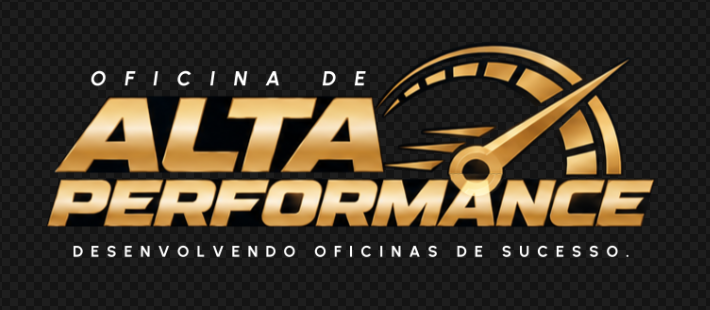

Mentoria de alta performance · Linha diesel pesado

Conectando…
Formulário
Respostas dos mentorados
Esta é a tela que seus mentorados veem. Cada um enxerga apenas as próprias respostas; só você vê todas, na aba “Respostas dos mentorados”.
0% preenchido